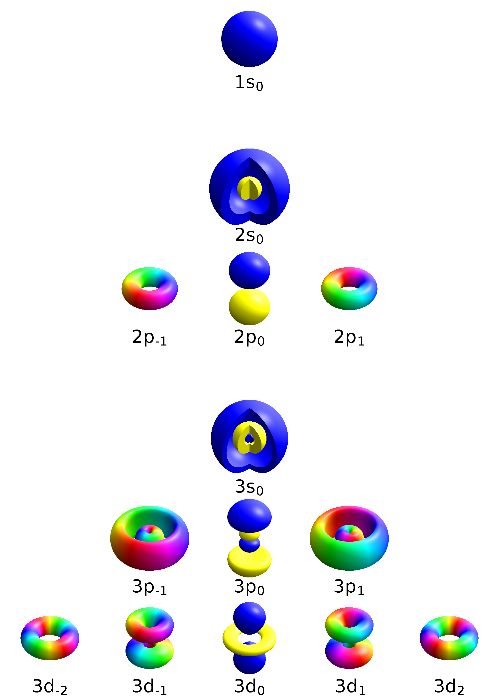
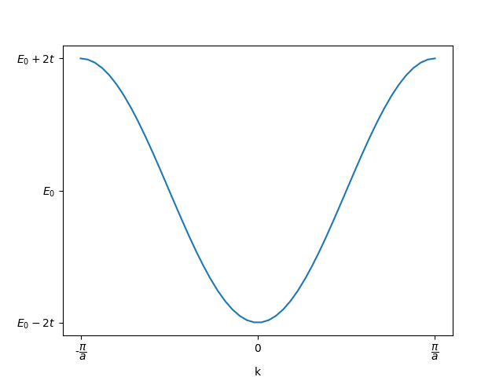
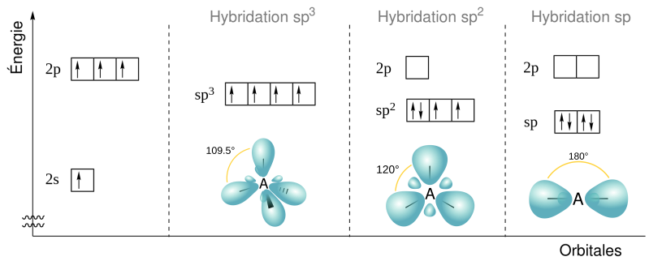
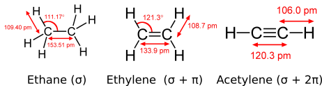

Modèle des liaisons fortes
Contents
Modèle des liaisons fortes#
Limites forte et faible de l’intéraction électron-réseau#
Dans l’approche de l’électron presque libre, le potentiel est supposé suffisamment faible pour être considéré comme une légère perturbation de l’électron tout à fait libre. Les électrons sont d’autant plus libres (relation de dispersion parabolique, \(\mathcal{E} \propto k^2\)) que la norme de leur vecteur d’onde est petite par rapport à la première zone de Brillouin (\(\Vert \vec{k} \Vert \ll \frac{\pi}{a}\)). Autrement dit, l’influence du réseau sur les électrons est d’autant plus faible que leur longueur d’onde est grande devant le pas du réseau (\(\lambda \gg a\)).
Au contraire, l’approche des liaisons fortes (tight binding model) postule que le potentiel atomique est la contribution principale de l’énergie des électrons. On suppose que les électrons sont aussi fortement liés à leur atome que si chaque atome du cristal était isolé; ce sont les interactions avec les atomes voisins qui sont considérés comme des perturbations subies par les électrons dans leurs orbitales atomiques. Cette approche est valide lorsque le paramètre de maille \(a\) s’étend : les conditions pour que les électrons soient libres sont de plus en plus restrictives et le potentiel est de moins en moins négligeable. De fait, plus les atomes sont éloignés les uns des autres, plus il est réaliste de les considérer comme des atomes isolés; il suffit d’imaginer un cristal dont le paramètre de maille est de l’ordre du kilomètre !
Combinaisons d’orbitales atomiques#
La résolution de l’équation de Schrödinger pour l’atome d’hydrogène isolé fournit les expressions analytiques des orbitales atomiques \(\Psi_{n, \ell}\) en fonction de leurs nombres quantiques \(n\) et \(\ell\):

By Geek3 - Own work, Created with hydrogen 1.1, CC BY-SA 4.0, https://commons.wikimedia.org/w/index.php?curid=67681892
La complexité du problème croît tellement vite que les expressions analytiques des orbitales de l’atome isolé d’hélium ne sont pas accessibles. En pratique, les orbitales de l’atome d’hydrogène s’avèrent des approximations pertinentes des états électroniques pour la plupart des espèces chimiques. En contrepartie, des règles empiriques doivent être employée pour compenser l’absence de solutions analytique. Par exemple, on adjoint le principe d’Aufbau et la règle de Madelung pour déterminer le remplissage des couches atomiques (1s, 2s, 2p, 3s, 3p, 4s, 3d, etc.).
Ainsi, parmi toutes les solutions de l’équation de Schroëdinger intégrant le potentiel \(V\) du réseau, on recherche celles qui vérifient des critères issus de l’observation et des hypothèses du modèle.
électrons fortment liés : comme on considère que les électrons sont fortement liés à leur atome, leurs états accessibles sont les orbitales atomiques de chaque atome de l’édifice cristallin, dont l’amplitude (densité de probabilité de présence électroniques) est concentré au voisinage du noyau et décroît rapidement avec la distance. Leurs fonctions d’onde sont des superposition, c’est-à-dire des combinaisons linéaires, d’orbitales atomiques issus des atomes du cristal.
comportement ondulatoire : les fonctions d’onde doivent présenter un comportement ondulatoire afin de rendre compte de l’éventuelle propagation des ondes électroniques, lorsque les conditions le permettent.
périodicité du résseau : les fonctions d’onde des électrons mobiles doivent avoir la périodicité du réseau. L’invariance des états par translation selon un vecteur du réseau s’écrit \(\psi (x + ma) = \psi (x), \quad \forall m \in \mathbb{Z} \).
Prises ensemble, les deux premières conditions conduisent à rechercher des superpositions d’états orbitaux pour chacun des \(N\) sites atomiques de la forme :
où le vecteur d’onde est imposé par les conditions limites : \(k = p\frac{2\pi}{Na}, p \in \mathbb{Z}\).
Finalement, compte tenu de la périodicité des fonctions d’onde héritée du réseau atomique, la superposition d’états s’écrit : $\( \psi_m (x) = e^{ikma} \psi_0 (x+ma) \)$
En tenant compte de la périodicité des fonctions d’onde, ces états s’écrivent à partir de l’orbitale de l’atome origine :
Energie électronique#
Dans ces conditions, le potentiel \(V\) du réseau s’exprime comme la répétition, sur chaque site \(\vec{T}\) du réseau, du potentiel électrostatique créé par les noyaux vus comme des charges ponctuelles \(q\) :
Soit pour une rangée d’atomes :
Vu comme un corpuscule, l’énergie d’un électron situé en \(x\) plongé dans un potentiel \(V\) vaut \(-eV(x)\). Dans sa version ondulatoire \(\psi(x)\), l’énergie de l’électron doit intégrer l’ensemble de l’espace où l’électron se trouve “dilué” :
Or, les fonctions \(\psi_m\) décroissent très vite et seuls les deux termes de la double somme vérifiant \(|m-m^\prime| \le 1\) ne s’annulent pas :
Le terme \(U_0\) représente l’énergie de l’électron sur son site : c’est le gain d’énergie à être sur son atome plutôt qu’ailleurs.
Le terme \(t\) représente l’énergie de transfert : c’est le gain d’énergie associé à la délocalisation (partielle) sur les sites voisins de droite (+) et de gauche (-). C’est une mesure du recouvrement des orbitales voisines.
Les termes de transfert électronique sont responsables de la perturbation subies par les orbitales atomiques pures induites par la présence du réseau; en l’occurrence l’influence du réseau se limite aux plus proches voisins.
Finalement, l’énergie d’un électron s’exprime donc :
import matplotlib.pyplot as plt
import numpy as np
k = np.linspace (-np.pi, np.pi)
E = 0 - np.cos (k)
fig, ax = plt.subplots ()
ax.plot (k, E)
ax.set_xlabel ('k')
ax.set_xticks([-np.pi, 0, np.pi], [r'-$\dfrac{\pi}{a}$', '0', r'$\dfrac{\pi}{a}$'])
ax.set_yticks([-1, 0, 1],[r'$E_0 - 2t$', '$E_0$', r'$E_0 + 2t$'])
fig.savefig ('./figures/lcao_dispersion.png')
plt.close ()



Densité d’états#
A partir de la relation de dispersion, peuvent être dérivés la densité d’états et la masse effective.
fig, ax = plt.subplots ()
E = np.linspace (-1, 1, 200)
gE = (1 - (E/0.2)**2) ** (-0.5)
ax.plot (E, gE)
/tmp/ipykernel_6163/4093420301.py:4: RuntimeWarning: invalid value encountered in power
gE = (1 - (E/0.2)**2) ** (-0.5)
[<matplotlib.lines.Line2D at 0x7f4ccb63bbe0>]
Description du potentiel du réseau#
La fonction \(V (\vec{r})\) possède par construction la périodicité du réseau. Elle peut donc s’exprimer comme la superposition de fonctions périodiques dans chaque direction (\(x\), \(y\), \(z\)) de l’espace :
En effet, en première approximation, le potentiel périodique considéré comme une oscillation sinusoïdale de période \(a\). Les termes d’ordre supérieurs (\(n\ge 2\)) sont périodique de période \(a/n\), ce qui conserve la périodicité de période \(a\). Ces termes apportent des corrections de plus en plus fines à cette approximation jusqu’à faire tendre la série vers la fonction originale, éventuellement à la limite \(n\rightarrow \infty\) (c’est la décomposition en série de Fourier).
Dans sa version complexe (décomposition en ondes planes), cette série prend la forme suivante :